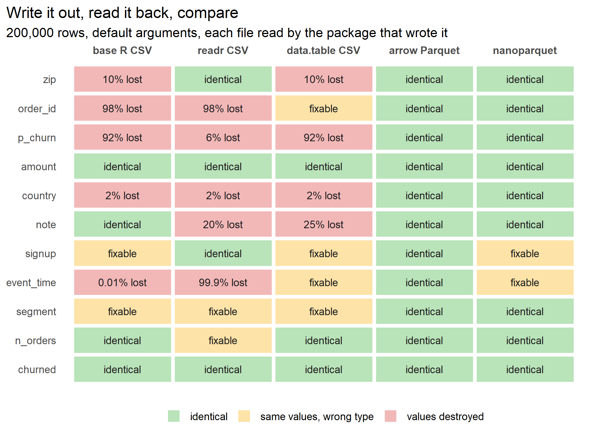

Parquet vs CSV in R is usually argued on file size and speed. I wanted to know something
more basic: does the data come back? I wrote an eleven column data frame to CSV three ways,
with base R, readr, and data.table, and read each file back with the package that wrote it.
Every one of them destroyed values in at least four of the eleven
columns, in ways that no cleanup afterwards can reverse. The same data frame written to
Parquet with arrow came back identical() in every column.

Figure 1: What came back from each round trip, column by column. Fixable means the values survived but the type did not, so a reader who already knew the original schema could convert them back. Lost means some values were gone even after that conversion, with the share of rows affected.
The frame holds the columns a customer table actually has. ZIP codes, 18 digit order IDs of
the kind 64 bit database keys produce, a model score, a price, ISO country codes (the one for
Namibia is NA), a free text note, a signup date, an event timestamp in New York time with
milliseconds, a segment factor, a count, and a flag.
library(data.table)
library(readr)
library(arrow)
set.seed(20261002)
n <- 2e5
tz <- "America/New_York"
d <- data.frame(
zip = sprintf("%05d", sample(501:99950, n, replace = TRUE)),
order_id = paste0(sample(1:9, n, TRUE),
sprintf("%08d", sample.int(99999999, n, TRUE)),
sprintf("%09d", sample.int(999999999, n, TRUE))),
p_churn = plogis(rnorm(n)),
amount = round(rlnorm(n, 3, 1), 2),
country = sample(c("US", "GB", "DE", "FR", "NA", "ZA", "BR", "IN"), n, TRUE,
prob = c(40, 10, 10, 10, 2, 8, 10, 10)),
note = sample(c(NA, "", "ok", "gift, wrapped", 'said "thanks"',
"line one\nline two"), n, TRUE, prob = c(20, 20, 40, 10, 5, 5)),
signup = as.Date("2019-01-01") + sample(0:2000, n, TRUE),
event_time = as.POSIXct("2024-01-01", tz = tz) + round(runif(n, 0, 366 * 86400), 3),
segment = factor(sample(c("low", "mid", "high"), n, TRUE),
levels = c("low", "mid", "high")),
n_orders = rpois(n, 3),
churned = runif(n) < 0.3
)The grading is deliberately generous to CSV. For every column, repair() converts whatever
came back into the original type, using the original factor levels and time zone, which is
information the CSV file does not contain. Anything still wrong after that was destroyed, not
just mislabelled.
dir <- tempfile()
dir.create(dir)
files <- file.path(dir, c("base.csv", "readr.csv", "dt.csv", "arrow.parquet",
"nano.parquet"))
names(files) <- c("base R CSV", "readr CSV", "data.table CSV", "arrow Parquet",
"nanoparquet")
write.csv(d, files[[1]], row.names = FALSE)
write_csv(d, files[[2]])
fwrite(d, files[[3]])
write_parquet(d, files[[4]])
nanoparquet::write_parquet(d, files[[5]])
back <- list(read.csv(files[[1]]),
read_csv(files[[2]], show_col_types = FALSE),
fread(files[[3]]),
read_parquet(files[[4]]),
nanoparquet::read_parquet(files[[5]]))
names(back) <- names(files)
# The most generous reader possible. It knows each column's original type, its
# factor levels, and its time zone, and converts whatever came back into that.
repair <- function(o, b) {
if (is.factor(o)) return(factor(as.character(b), levels = levels(o)))
if (inherits(o, "POSIXct")) return(as.POSIXct(b, tz = attr(o, "tzone")))
if (inherits(o, "Date")) return(as.Date(as.character(b)))
if (is.character(o)) {
if (inherits(b, "integer64") || !is.numeric(b)) return(as.character(b))
return(formatC(as.numeric(b), format = "f", digits = 0))
}
switch(typeof(o), integer = as.integer(b), double = as.double(b),
logical = as.logical(b))
}
same <- function(o, r) (is.na(o) & is.na(r)) | (!is.na(o) & !is.na(r) & o == r)
grade <- function(o, b) {
if (identical(o, b)) return(data.frame(status = "identical", lost = 0))
lost <- mean(!same(o, repair(o, b)))
data.frame(status = if (lost == 0) "fixable" else "lost", lost = lost)
}
res <- do.call(rbind, lapply(names(back), function(f) do.call(rbind, lapply(
names(d), function(col) cbind(format = f, column = col,
grade(d[[col]], back[[f]][[col]]))))))The reader guesses. CSV stores text, so every reader has to guess each column’s type, and
the guesses are plausible for the characters and wrong for the meaning. read.csv and
fread turn ZIP codes into integers, so 9.5% of
them lose a leading zero. readr keeps them only because a value with a leading zero turned
up among the rows it samples before guessing. All three readers turn Namibia into a missing value.
read.csv and readr read the order IDs as doubles, which cannot hold 18 digits, so
98% of them change. fread reads them as 64
bit integers, which is why that cell is fixable.
The writer throws information away. write.csv and fwrite both write doubles to 15
significant digits. A double needs 17 to round trip, so
92% of the model scores come back slightly
different. The error is tiny, and that is exactly why nobody notices.
x <- back[["data.table CSV"]]$p_churn
max_rel <- max(abs(x / d$p_churn - 1))
data.frame(all.equal = isTRUE(all.equal(d$p_churn, x)),
identical = identical(d$p_churn, x),
max_relative_error = signif(max_rel, 2))
## all.equal identical max_relative_error
## 1 TRUE FALSE 5.1e-15all.equal() tolerates differences up to about 1.5e-8, so it passes. A hash, a join on a
computed key, or a check that your pipeline reproduced last week’s output will not. Two more
writer losses: write_csv writes only as many decimal places of seconds as
options(digits.secs) asks for, and that option is unset by default, so the milliseconds go.
And fwrite writes a missing string as an empty field, which fread then reads as "", so
the difference between unknown and blank is gone.
write.csv writes timestamps as local clock time with no offset. That is lossless on every
day but one.
b <- repair(d$event_time, back[["base R CSV"]]$event_time)
gone <- !same(d$event_time, b)
hour <- format(d$event_time, "%Y-%m-%d %H") == "2024-11-03 01"
dst <- data.frame(
in_repeated_hour = sum(hour),
came_back_wrong = sum(gone),
wrong_outside_it = sum(gone & !hour),
hours_off = paste(unique(abs(as.numeric(b[gone] - d$event_time[gone],
units = "hours"))), collapse = ", "))
dst
## in_repeated_hour came_back_wrong wrong_outside_it hours_off
## 1 50 24 0 1On 3 November 2024 the clocks in New York went back, so 1:00 to 2:00 am happened twice. The file writes both passes through that hour the same way, so the reader has to guess which one each row belongs to. Of the 50 timestamps in that hour, R put 24 on the wrong pass, each exactly an hour off. Every other timestamp in the year came back intact.
The reader misparses correct text. write_csv does write doubles exactly. Parsed with
base R, its text reproduces every value. Parsed with readr, it does not.
txt <- read_csv(files[["readr CSV"]], col_types = cols(.default = col_character()))$p_churn
data.frame(base_parse_exact = identical(as.numeric(txt), d$p_churn),
readr_share_wrong = round(mean(parse_double(txt) != d$p_churn), 4))
## base_parse_exact readr_share_wrong
## 1 TRUE 0.0647And fread does not undo the doubled quotes that CSV uses to escape a quote inside a field,
so a note reading said "thanks" comes back with four quote marks. This is a known
limitation, with an issue open since 2015.
cat(fread(text = 'id,note\n1,"said ""thanks"""')$note)
## said ""thanks""The nanoparquet column in the figure is worth a second look. Its values are all correct, but
dates come back stored as integers and timestamps come back in UTC, so the two columns fail
identical(). Parquet stores the values themselves exactly. The R details (the time zone
name, the storage type, the factor level order) come back only when the writer records them
in the file’s metadata, which arrow does. The format is not the guarantee. The writer is.
library(microbenchmark)
wr <- microbenchmark(
"base R CSV" = write.csv(d, files[[1]], row.names = FALSE),
"readr CSV" = write_csv(d, files[[2]]),
"data.table CSV" = fwrite(d, files[[3]]),
"arrow Parquet" = write_parquet(d, files[[4]]),
"nanoparquet" = nanoparquet::write_parquet(d, files[[5]]),
times = 5)
rd <- microbenchmark(
"base R CSV" = read.csv(files[[1]]),
"readr CSV" = read_csv(files[[2]], show_col_types = FALSE),
"data.table CSV" = fread(files[[3]]),
"arrow Parquet" = read_parquet(files[[4]]),
"nanoparquet" = nanoparquet::read_parquet(files[[5]]),
times = 5)
med <- function(m) tapply(m$time, m$expr, median)[names(files)] / 1e9
data.frame(file_mb = round(file.size(files) / 1e6, 1),
write_sec = round(med(wr), 2),
read_sec = round(med(rd), 2),
row.names = names(files))
## file_mb write_sec read_sec
## base R CSV 22.9 6.42 1.47
## readr CSV 20.5 2.87 0.55
## data.table CSV 21.2 0.05 0.05
## arrow Parquet 9.1 0.37 0.08
## nanoparquet 9.2 0.17 0.12The Parquet files are 9.1 MB against
20.5 to 22.9 MB for the CSVs. On
speed the story is less convenient. data.table wrote its CSV in
0.05 seconds and read it back in 0.05,
against 0.37 and 0.08 for arrow. Timings are
medians of five runs in randomized order, reading from a warm file cache. If speed were the
whole case for Parquet, fread would make a decent rebuttal. It cannot rebut the figure.
A file that only R can read back correctly would not help a mixed team. Here is pandas reading the arrow Parquet file, against pandas reading the readr CSV.
import numpy as np
import pandas as pd
truth = np.asarray(r.p_truth)
def audit(df):
return {"zip_leading_zero": int(df["zip"].astype(str).str.startswith("0").sum()),
"country_NA_kept": int((df["country"] == "NA").sum()),
"note_missing": int(df["note"].isna().sum()),
"note_empty": int((df["note"] == "").sum()),
"p_churn_bits_off": int((df["p_churn"].to_numpy() != truth).sum())}
pq = pd.read_parquet(r.pq_path)
csv_default = audit(pd.read_csv(r.csv_path))
print(pd.DataFrame({
"R original": r.r_counts,
"read_parquet": audit(pq),
"read_csv": csv_default,
"read_csv exact": audit(pd.read_csv(r.csv_path, float_precision="round_trip")),
}))
## R original read_parquet read_csv read_csv exact
## zip_leading_zero 19056 19056 0 0
## country_NA_kept 4090 4090 0 0
## note_missing 39912 39912 79861 79861
## note_empty 39949 39949 0 0
## p_churn_bits_off 0 0 53984 0
print(pq["event_time"].dtype, list(pq["segment"].cat.categories))
## datetime64[us, America/New_York] ['low', 'mid', 'high']pandas gets back every ZIP code, every Namibian row, the difference between missing and blank,
every bit of every double, the New York time zone, and R’s factor level order. Its CSV reader,
handed the readr file, drops every leading zero, every Namibian row, and the difference
between missing and blank. Its default float parser also gets
27% of the doubles wrong in the
last bit, the same failure as readr’s, which float_precision="round_trip" fixes.
Every CSV failure above has an argument that prevents it: colClasses, col_types,
keepLeadingZeros, na, float_precision. The catch is that each one has to be known in
advance, column by column, and nothing in the file tells you which. Parquet carries the schema
with the data.
The damage to doubles is a relative error of at most 5.1e-15. It will not move a regression coefficient. It matters for reproducibility, not for inference.
I did not test compression codecs, reading a subset of columns (where Parquet should pull further ahead), partitioned datasets, or files larger than memory. One machine, R 4.4.3, data.table 1.18.6.1, readr 2.2.0 on vroom 1.7.1, arrow 25.0.1, nanoparquet 0.5.2, and pandas 2.3.3 for the chunk above. The pandas counts came out the same when I reran them separately under pandas 3.0.6.
arrow::write_parquet(). Keep CSV for
people and for tools that read nothing else.identical(), not all.equal(). The tolerance that makes
all.equal() useful for models is what lets a lossy file pass.read_parquet(). For CSV, pass dtype and float_precision="round_trip".Whether someone else can get your exact numbers back from your files is the replication standard, and it is covered in A Guide on Data Analysis.